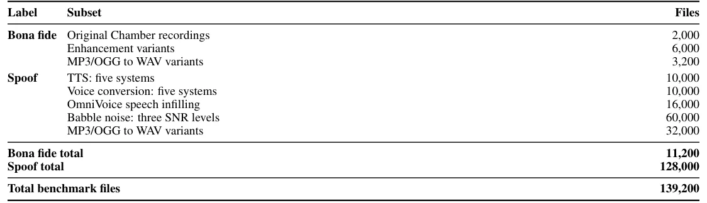
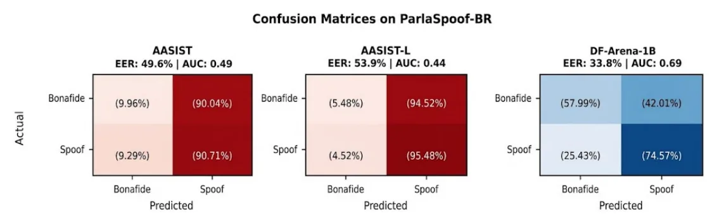
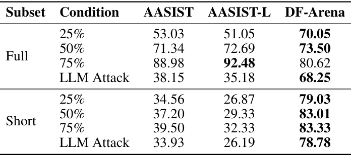
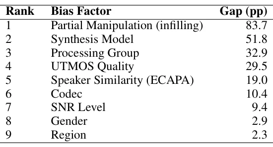

O problema: deepfakes de voz na política brasileira
Inteligência artificial generativa tornou barato fabricar áudio falso. Você grava alguns segundos da voz de um político e, com ferramentas públicas, consegue fazê-lo dizer qualquer coisa. O risco para eleições é direto: narrativas falsas circulam antes que jornalistas ou agências de checagem consigam reagir.
No Brasil, a eleição de 2022 foi marcada por campanhas coordenadas de desinformação. Em 2024, áudios manipulados e gerados por IA já apareceram em campanhas eleitorais. Com as eleições presidenciais de 2026 no horizonte, sistemas de clonagem de voz zero-shot — que exigem apenas alguns segundos de referência — estão acessíveis a qualquer pessoa.
Detectores de deepfake de áudio existem e funcionam bem em benchmarks controlados como o ASVspoof, onde atingem taxas de erro próximas de zero. Mas quando testados em áudio do mundo real, o desempenho despenca. Pior: eles dependem de pistas espúrias — estatísticas de silêncio, assinaturas de bitrate, conteúdo falado — em vez de artefatos intrínsecos à síntese de voz. E há indícios de que erros variam conforme gênero, idade e sotaque do falante.
Para o português brasileiro, o único corpus dedicado é o BRSpeech-DF, feito com gravações limpas de audiolivros em estúdio. Ele não inclui conversão de voz, manipulação parcial nem estratificação regional. Falta um benchmark que reflita a diversidade linguística, acústica e demográfica do país — e que capture o contexto político real onde deepfakes fazem mais estrago.
ParlaSpoof-BR: um dataset de áudio parlamentar brasileiro
Os autores — da Universidade Federal de Goiás, da Universidade Tecnológica Federal do Paraná e da Ermis — criaram o ParlaSpoof-BR, um benchmark de deepfakes de áudio derivado de gravações oficiais da Câmara dos Deputados. O dataset contém 139.200 arquivos de áudio, dos quais 11.200 são reais (bona fide) ou derivados de reais, e 128.000 são sintéticos (spoofed).
O dataset é balanceado: 40 locutores, metade homens e metade mulheres, distribuídos pelas cinco regiões geográficas do Brasil — Norte, Nordeste, Centro-Oeste, Sudeste e Sul. Cada locutor contribui com 50 enunciados de pelo menos cinco segundos, totalizando 2.000 amostras reais. Além disso, cinco segmentos de pelo menos dez segundos por locutor foram reservados como referência para clonagem de voz, sem sobreposição com as amostras de avaliação.
As gravações preservam a reverberação e a variabilidade de microfone das sessões parlamentares. Identidades dos locutores e fronteiras dos segmentos vieram diretamente dos metadados do arquivo oficial. Transcrições automáticas e timestamps no nível de palavra foram obtidos com o WhisperX, permitindo manipulações parciais precisas.

Três tipos de ataque: TTS, conversão de voz e manipulação parcial
Os ataques foram gerados usando pares de locutores distintos. O locutor A fornece a identidade-alvo (a voz que será clonada), e o locutor B fornece o conteúdo linguístico (o que será dito). Essa configuração é consistente em todos os pipelines de geração.
O primeiro tipo de ataque é text-to-speech (TTS). Cinco modelos estado-da-arte de clonagem de voz zero-shot foram avaliados: OmniVoice, XTTS-v2, Chatterbox Multilingual V3, VoxCPM2 e Qwen3-TTS. Cada modelo processou as 2.000 enunciações originais, gerando 10.000 arquivos TTS no total.
O segundo tipo é conversão de voz (voice conversion, VC). Aqui, o áudio do locutor B é convertido para a identidade do locutor A, preservando o conteúdo linguístico. Cinco sistemas foram testados: Seed-VC, kNN-VC, OpenVoice-v2, X-VC e EZVC. Cada um processou as 2.000 enunciações, gerando mais 10.000 arquivos VC.
O terceiro tipo é manipulação parcial via infilling de áudio. O OmniVoice, que tem arquitetura bidirecional não-causal, permite regenerar uma região mascarada condicionada ao áudio circundante e à transcrição desejada. Isso evita gerar segmentos isolados sem contexto acústico. Quatro condições de manipulação foram criadas, cada uma com 2.000 amostras: três com razões fixas de manipulação (25%, 50% e 75% das palavras), e uma quarta com edição semântica guiada por LLM.
Nessa última condição — chamada de LLM Attack — o Claude Sonnet 4 analisa a transcrição e seleciona uma edição mínima que altera o sentido político ou factual do enunciado. A ideia é simular um ataque realista: em vez de resintetizar tudo, o adversário troca apenas as palavras necessárias para mudar a interpretação. Esse tipo de manipulação é mais difícil de detectar porque a maior parte do áudio permanece autêntica.
Variantes de robustez: ruído, codec e realce
Além dos ataques básicos, os autores criaram variantes para testar robustez a condições realistas de áudio. Três tipos de perturbação foram aplicados: ruído de multidão (babble noise), compressão de codec (MP3, Opus, AAC) e realce de fala (speech enhancement).
O ruído de multidão foi adicionado aos 36.000 ataques básicos em seis níveis de SNR (relação sinal-ruído), gerando 60.000 variantes. Três codecs foram aplicados aos 36.000 ataques e a 3.200 amostras reais, gerando 35.200 variantes. Realce de fala foi aplicado a 6.000 amostras reais usando três métodos (DeepFilterNet, ResembleEnhance e CleanUNet), gerando 9.200 variantes.
Essas variantes formam o conjunto de robustez, com 101.200 arquivos. Elas são avaliadas separadamente do conjunto principal (core set) porque sua distribuição desigual dominaria as métricas agregadas. O core set tem 38.000 arquivos: 2.000 reais e 36.000 ataques não-perturbados.
Protocolo de avaliação e métricas
Três detectores estado-da-arte foram testados: AASIST, AASIST-L (uma variante maior) e DF-Arena-1B. Todos foram treinados originalmente no ASVspoof 2019, onde atingem taxas de erro (EER) abaixo de 1,2%.
As métricas principais são: EER (Equal Error Rate, a taxa de erro quando falsos positivos e falsos negativos se igualam), AUC (área sob a curva ROC, independente de limiar), F1-score macro (média balanceada entre classes), acurácia, e precisão e recall da classe spoof. Como o core set tem 94,7% de amostras sintéticas, acurácia sozinha é enganosa — um detector que sempre prevê spoof teria 94,7% de acurácia, mas seria inútil.
Resultados gerais: detectores falham em áudio político brasileiro
No core set, os três detectores obtiveram EERs muito superiores aos reportados no ASVspoof. O AASIST teve EER de 49,62%, o AASIST-L de 53,95%, e o DF-Arena-1B de 33,83%. Os dois primeiros ficaram próximos do acaso, com AUCs abaixo de 0,5. O DF-Arena-1B foi o melhor, mas ainda assim errou 42,01% das amostras reais.
O AASIST e o AASIST-L exibiram viés extremo em direção à classe spoof: classificaram quase tudo como sintético, independentemente do rótulo verdadeiro. As taxas de falso positivo (FPR) foram de 90,04% e 94,52%, respectivamente. Isso significa que nove em cada dez enunciados reais foram marcados como falsos. A diferença modesta entre as variantes sugere que aumentar a capacidade do modelo não resolve o problema de desajuste de domínio.
O DF-Arena-1B teve previsões mais balanceadas, mas ainda distantes do ideal. Sua AUC de 0,693 indica discriminação melhor que acaso, mas longe da confiabilidade necessária para uso em contextos eleitorais. A conclusão é clara: detectores treinados em benchmarks controlados não generalizam para áudio político brasileiro.

Desempenho por método de síntese: VC é mais fácil que TTS
Quando analisado por método de síntese, o DF-Arena-1B teve desempenho melhor em conversão de voz (VC) do que em text-to-speech (TTS). Para VC, o EER médio foi de 17,1%, AUC de 0,885 e recall de 99,9%. Para TTS, o EER médio foi de 26,7%, AUC de 0,777 e recall de 81,8%.
Mas a variação dentro de cada família é enorme. O OpenVoice-v2 (um sistema VC) teve o menor EER de todos: 6,3%. Já o VoxCPM2 e o Qwen3-TTS (ambos TTS) tiveram os piores resultados, com recalls de 60,9% e 48,2%. Isso significa que 39,1% e 51,8% dos deepfakes gerados por esses modelos passaram despercebidos pelo detector.
Esses números mostram que o desempenho depende fortemente do gerador individual, não só da família (TTS ou VC). Modelos mais recentes ou com arquiteturas diferentes produzem artefatos que o detector não foi treinado para reconhecer. Isso é um problema sério: basta um adversário escolher o modelo certo para contornar a detecção.
Manipulação parcial: o ataque mais perigoso
A manipulação parcial revelou a maior fraqueza dos detectores. Quando 25% das palavras foram resintetizadas, o recall do DF-Arena-1B foi de 17,27%. Com 50%, subiu para 35,44%. Com 75%, chegou a 51,85%. Mas no LLM Attack — onde o modelo de linguagem escolhe as palavras certas para alterar o sentido — o recall foi de apenas 9,49%.
Isso significa que 90,51% dos ataques semânticos guiados por LLM passaram despercebidos. Esse é o cenário mais realista e perigoso: um adversário não precisa resintetizar tudo, apenas trocar palavras-chave para inverter o significado de uma frase. Por exemplo, mudar 'votei contra' para 'votei a favor' em um discurso parlamentar.
Os autores testaram também a detecção no nível de janela temporal. Usando janelas deslizantes de 4 segundos com 50% de sobreposição, a acurácia do DF-Arena-1B foi de 93,15% para áudio totalmente sintético, mas caiu para 51,54% no LLM Attack. Mesmo quando a janela intersecta a região manipulada, o detector erra metade das vezes.
Esse resultado é crítico: detectores atuais são praticamente cegos a manipulações parciais semanticamente guiadas. E essas são exatamente as mais eficazes para desinformação política, porque preservam a maior parte do áudio autêntico e alteram apenas o necessário para mudar a narrativa.

Análise de viés: método importa mais que demografia
Os autores investigaram se o desempenho dos detectores varia conforme características demográficas (gênero, região) ou metodológicas (modelo de síntese, grau de manipulação). A análise foi feita com o DF-Arena-1B usando janelas deslizantes de 4 segundos.
O resultado principal: fatores metodológicos dominam. A diferença de desempenho entre condições de manipulação parcial foi de 83,7 pontos percentuais. Entre modelos de síntese individuais, foi de 51,8 pontos. Já entre gêneros, a diferença foi de apenas 2,9 pontos, e entre regiões, 2,3 pontos.
Isso contrasta com estudos anteriores que encontraram viés significativo por gênero, idade ou sotaque em outros idiomas. No ParlaSpoof-BR, disparidades demográficas são mínimas. A variação está em como o áudio foi gerado, não em quem está falando.
Ainda assim, há nuances. O detector teve desempenho ligeiramente melhor em vozes masculinas (acurácia de 72,81%) do que femininas (69,89%). Entre regiões, o Sudeste teve a maior acurácia (72,69%) e o Centro-Oeste a menor (70,36%). Essas diferenças são pequenas, mas podem acumular em sistemas de produção.

Robustez a perturbações: ruído, codec e realce
Os autores testaram como os detectores se comportam sob condições realistas de áudio. Três tipos de perturbação foram aplicados: ruído de multidão, compressão de codec e realce de fala.
Ruído de multidão foi adicionado em seis níveis de SNR, de 5 dB (muito ruidoso) a 30 dB (quase limpo). O DF-Arena-1B manteve desempenho razoável: a AUC caiu de 0,693 (sem ruído) para 0,652 com SNR de 5 dB. Já o AASIST e o AASIST-L, que já performavam mal no áudio limpo, degradaram ainda mais.
Compressão de codec teve efeito variável. MP3 e Opus causaram quedas moderadas de desempenho, enquanto AAC teve impacto maior. Isso sugere que alguns codecs introduzem artefatos que confundem os detectores, possivelmente porque alteram as pistas espúrias (como estatísticas de silêncio) que os modelos aprenderam a explorar.
Realce de fala teve o efeito mais interessante. Aplicar DeepFilterNet, ResembleEnhance ou CleanUNet a amostras reais aumentou a taxa de falsos positivos — ou seja, áudio real realçado foi mais frequentemente classificado como sintético. Isso indica que os detectores dependem de características de baixo nível que o realce remove, não de artefatos intrínsecos à síntese.
Limitações e trabalho futuro
O ParlaSpoof-BR é o primeiro benchmark de deepfakes de áudio político em português brasileiro, mas tem limitações. O dataset contém 40 locutores, balanceados por gênero e região, mas não cobre toda a diversidade linguística e acústica do país. Sotaques regionais dentro de cada região não foram estratificados. Idade dos locutores não foi controlada.
Os ataques cobrem TTS, VC e manipulação parcial, mas não incluem outras técnicas emergentes, como síntese neural end-to-end com controle prosódico fino ou modelos de linguagem de áudio como AudioLM. Também não foram testados ataques adversariais adaptativos, onde o adversário conhece o detector e ajusta a síntese para enganá-lo.
A análise de viés mostrou que fatores metodológicos dominam, mas não explorou interações entre fatores (por exemplo, se certos modelos de síntese têm viés maior por gênero). Estudos futuros podem decompor essas interações com mais granularidade.
Os autores destacam três direções para trabalho futuro. Primeiro, treinamento ciente de viés (bias-aware training), que force o detector a não depender de pistas espúrias. Segundo, adaptação a áudio político brasileiro, possivelmente com fine-tuning em ParlaSpoof-BR ou técnicas de domain adaptation. Terceiro, métodos de detecção eficazes em manipulações parciais, que é o cenário mais realista e perigoso.
Outra direção importante é integração com sistemas de verificação de fala (speaker verification). Detectores de deepfake identificam se um áudio é sintético; sistemas de verificação identificam se a voz corresponde a um locutor conhecido. Combinar ambos pode aumentar robustez e reduzir falsos positivos.
Implicações para integridade eleitoral
Os resultados têm implicações diretas para a integridade eleitoral no Brasil. Detectores estado-da-arte, treinados nos melhores benchmarks disponíveis, falham em áudio político brasileiro. Eles erram quase metade das amostras reais e deixam passar a maioria dos ataques parciais semanticamente guiados.
Isso significa que confiar nesses sistemas para moderar conteúdo ou alertar eleitores é arriscado. Um detector que marca 90% do áudio real como falso causaria alarmes falsos em massa, erodindo confiança. Um detector que deixa passar 90% dos ataques semânticos é inútil contra desinformação direcionada.
O ParlaSpoof-BR oferece um caminho para melhorar essa situação. Ele fornece um benchmark público, diverso e realista para treinar e avaliar detectores no contexto brasileiro. Pesquisadores e desenvolvedores podem usá-lo para adaptar modelos, testar robustez e medir viés antes de implantar sistemas em produção.
Mas tecnologia sozinha não resolve o problema. Deepfakes de áudio são parte de um ecossistema mais amplo de desinformação, que inclui coordenação em redes sociais, amplificação por bots e exploração de vieses cognitivos. Detecção técnica precisa ser combinada com alfabetização midiática, checagem de fatos e regulação responsável.
O dataset está disponível publicamente para pesquisa, sob licença Creative Commons. Os autores esperam que ele apoie o desenvolvimento de sistemas mais robustos e justos, contribuindo para a integridade eleitoral no Brasil e em outros contextos de língua portuguesa.
O que fica
- Detectores estado-da-arte de deepfake de áudio têm EER de 34% a 54% em áudio político brasileiro, contra menos de 1,2% em benchmarks controlados — eles não generalizam para o mundo real.
- Manipulação parcial guiada por LLM, que troca apenas palavras-chave para mudar o sentido, tem recall de 9,49%: 90% dos ataques semânticos passam despercebidos.
- Fatores metodológicos (modelo de síntese, grau de manipulação) impactam até 83,7 pontos percentuais no desempenho, enquanto gênero e região impactam menos de 3 pontos.
- ParlaSpoof-BR é o primeiro benchmark de deepfakes de áudio político em português, com 139.200 arquivos de 40 locutores balanceados por gênero e região, disponível publicamente.
Paper original: Cloned Voices, Real Consequences: Evaluating Bias in Political Deepfake Detection for Electoral Integrity in Brazil
Comentários
Nenhum comentário ainda. Seja o primeiro.